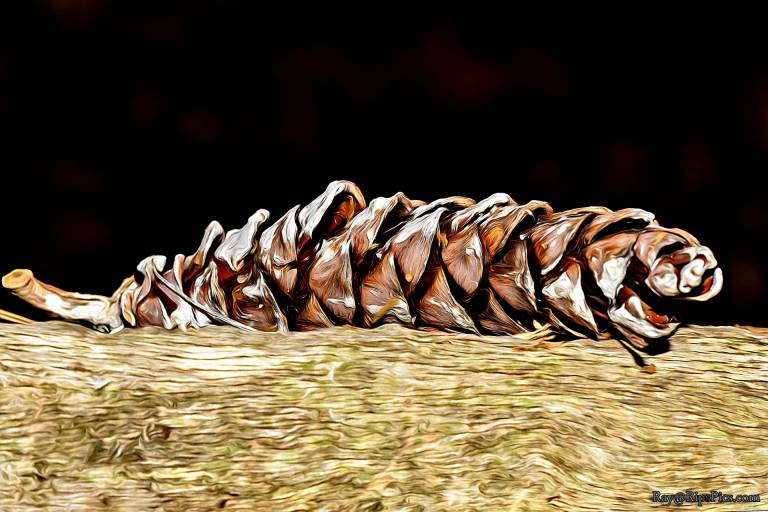
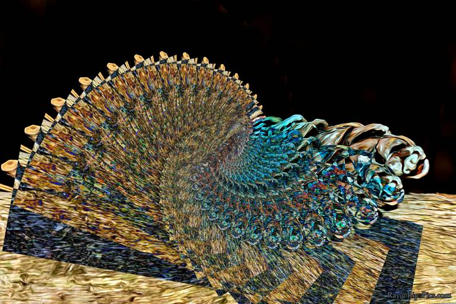
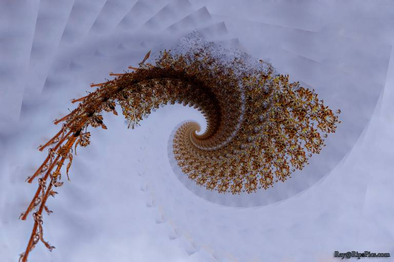
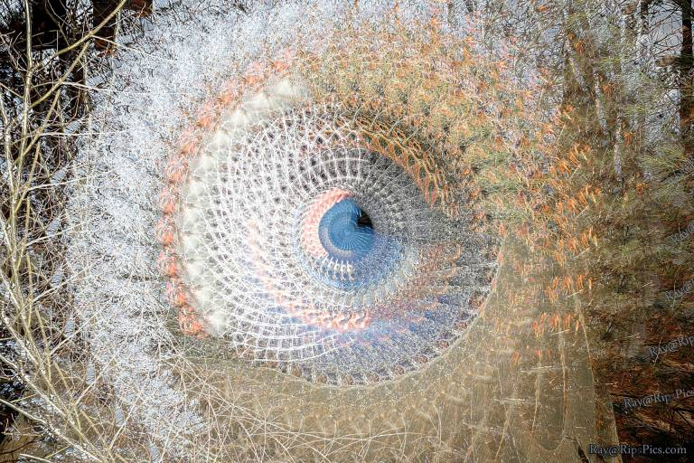

“Spirograph” a Photograph
NOTE: Photoshop only. Doable in other photo editors, but would be more tedious and labor intensive.
Let’s spin a photo and make it look a bit like we are playing with a Spirograph.
Like any abstract creation process, the results may work better on one photo than another, so try a few different photographs. You at least will get different results with each photo. Then pick your favorite.
Here is an example of what we are about to create:

Which was created by rotating many copies of this photo:

Duplicate Layer:
Once you have a photo open, make a copy of the image layer (Ctl-J or your favorite method).
Rotate and Move:
Now Transform the layer you created above, by pressing Ctl-T (or use the menu for Free Transform). With the Transform settings that come up across the top of the window, change the W (width) and H (height) values to 90%. Also set the angle to 10⁰. Now click the check mark to apply the transformation.
Pick a Layer Blend mode:
At the top of your Layers panel there is a drop down list, which says “Normal” by default. Click on this and select “Darken”. Now watch your image while pressing the down arrow key to cycle through the different layer blend modes (Darken, Multiply, Color Burn, etc..). When you see the two layers blend in an interesting way, stop at that blend mode.
Repeat the Transform with a magic key combination:
Ctl-Alt-Shift-T is the magic key combination. It creates a copy of the layer and applies the previous transformation at the same time. We want to do this multiple times, resulting in many copies of the original layer, with each copy smaller and more rotated.
So, press Ctl-Alt-Shift-T (yes, that is 4 keys, but you can do it).
Press Ctl-Alt-Shift-T again and again and again.
If you don’t like how it is turning out (it’s all becoming one white or black blotch), then undo those few Transforms (copies) and try a different blend mode.
If you are liking the pattern you see, then keep pressing Ctl-Alt-Shift-T, until you get a final result that you like. Frequently I end up with between 15 and 30 layers (copies). But for the right photo, a full 360 rotation (full circle) can look great. For the full circle, you’ll need 36 copies.
Crop
At this point you may have some artifacts on one or more edges that you want to crop off for a cleaner look.
Go for it, use your favorite cropping technique.
Adjust
The image obviously looks a lot different than the photo you started with. So now is a good time to adjust saturation, curves, levels, etc…
Done? Or Rinse and Repeat?
You can call it day if you are thrilled with the abstract image you have created. But I would suggest repeating the edit with different Transformation values (Width, Height, Angle), or even leaving out one or the other of the changes for a totally different look.
Using different Layer Blend Modes and different photos will give you totally different results! So make sure you try this with different photographs and blend modes.
Summary Cheat Sheet
Here is the above process in a nutshell.
- Open Photo:
- Duplicate Layer: Ctl-J
- Transform: Ctl-T
- Change Height, Width and/or Angle.
- Copy and Transform: Ctl-Alt-Shift-T
- REPEAT: Press Ctl-Alt-Shift-T again,
- multiple times (perhaps 15, 30 or even 36)
- Tweak Image: Crop, Saturation, Curves, Levels, etc…
- Save: Don’t forget to save your work!
More Sample Results
Snow on dry flowers with Darken Blend Mode:

Cement pipe with Lighten Blend Mode
